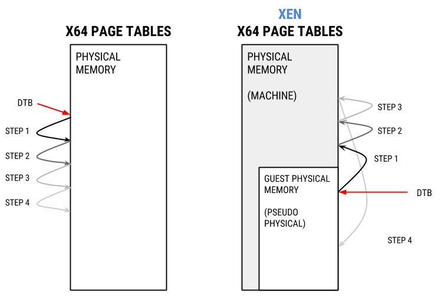

Rekall xen paravirtualization support
This article was copied from the Rekall Forensics blog, posted by Jordi Sanchez on 2015-08-31. Copied with permission for historical preservation.
If you've ever taken a memory image of a Linux virtual machine that's running under XEN in paravirtualization mode and you've tried to analyze it you'll have noticed most of your plugins don't work (if any).
[1] XEN-testmachine-PVguest.mem 14:20:42> pslist
ERROR:rekall.1:No profiles match this image. Try specifying manually.
---------------------------------------------------------------------------
RuntimeError Traceback (most recent call last)
[...]
RuntimeError: Unable to find a valid profile for this image. Try using -v for more details.
The reason is that XEN's page tables are funky. XEN uses a technique known as direct mapping which significantly differs from how memory management is done in many other virtualization solutions.
Per https://wiki.xenproject.org/wiki/X86_Paravirtualised_Memory_Management#Direct_Paging:
"In order to virtualise the memory subsystem all hypervisors introduce an additional level of abstraction between what the guest sees as physical memory (often called pseudo-physical in Xen) and the underlying memory of the machine (machine addresses in Xen). This is usually done through the introduction of a Physical to Machine (P2M) mapping. Typically this would be maintained within the hypervisor and hidden from the guest Operating System through techniques such as the use of Shadow Page Tables."
So instead of trapping every single memory access from the guest and having the hypervisor do an additional translation, XEN uses a different model.
Per https://wiki.xenproject.org/wiki/X86_Paravirtualised_Memory_Management#Direct_Paging:
"The Xen paravirtualised MMU model instead requires that the guest be aware of the P2M mapping and be modified such that instead of writing page table entries mapping virtual addresses to the (pseudo-)physical address space it would instead write entries mapping virtual addresses directly to the machine address space by mapping performing the mapping from pseudo physical to machine addresses itself using the P2M as it writes its page tables. This technique is known in Xen as direct paging."
What direct mapping means is that instead of having page tables where each entry points to physical memory of the guest, XEN's page tables point to the physical memory of the host.
But, why does XEN do this? The answer is performance.
Because the guest kernel knows it's virtualized and can cooperate with the hypervisor, XEN can afford cheating in virtualization. Knowing the presence of and cooperating with the hypervisor is one of the strong points of paravirtualization. It requires modification of the guest kernel but provides opportunities for speed improvements.
The guest kernel is allowed to know and use the host's physical memory for page table upkeeping. In exchange, it has to perform the upkeep of the page tables in cooperation with the host. This way no heavy translation mechanism like shadow pages tables must be used.
However, you can imagine that tinkering with the hosts's memory may allow a hostile kernel to subvert the host. XEN keeps the guest kernel in control because it runs in ring-3 and it is not allowed to directly write into the host memory. Instead, it must issue a hypercall, a call to the hypervisor, whenever it needs to update them. The hypervisor performs sanity checks to make sure the guest kernel request to modify page tables is not attempting to subvert the hypervisor itself or other VMs.
Throughout the article we'll be using XEN's terminology:
- XEN refers to the physical memory of the host as machine memory.
- The physical memory of the guest is called "pseudo-physical" or simply "physical" memory. To prevent confusion, we'll refer to guest physical memory as (pseudo-)physical.
XEN's direct mapping vs normal mapping
Let's deep dive into direct mapping. We'll compare how the page tables look in AMD64 vs how they look in a XEN guest. The host machine is 64 bits, runs the 3.13 kernel and has 32GB of ram, the guest has 256MB and runs kernel 3.2. All examples will be in the Rekall console.
Let's start by using a kernel symbol on a real machine and look how the MMU would translate it. We've picked the linux_proc_banner symbol, which is a kernel symbol that points to a format string (%s version %s) for the kernel version. It is defined at init/version.c in the kernel sources (Linux 3.19). It's a symbol present in all kernels and is what helps build the string in /proc/version.
To validate the expected address, we'll use the PAGE_OFFSET trick:
[1] kcore 13:03:23> hex(session.profile.get_constant("linux_proc_banner"))
Out<6> '0xffffffff81800040L'
[1] kcore 13:03:46> hex(session.profile.get_constant("linux_proc_banner") - session.profile.GetPageOffset())
Out<8> '0x1800040L'
linux_proc_banner is in 0xffffffff81800040 which corresponds to physical address 0x1800040L.
Despite this trick, while the system is running any virtual address translation is still done by the MMU. Let's use the vtop plugin to show the virtual address resolution just like the MMU would do. vtop outputs debug information about every step of the 2 or 3 level address translation:
[1] kcore 13:03:50> vtop(0xffffffff81800040L)
*************** 0xffffffff81800040 ***************
Virtual 0xffffffff81800040 Page Directory 0x1c0e000 (the DTB)
pml4e@ 0x1c0eff8 = 0x1c11067 (1st step translation)
pdpte@ 0x1c11ff0 = 0x1c12063 (2nd step translation)
pde@ 0x1c12060 = 0x80000000018001e1 (3rd step translation)
Large page mapped
Physical Address 0x1800040 (4th step, actual physaddr)
Deriving physical address from runtime physical address space:
Physical Address 0x1800040
vtop shows us that the physical address indeed 0x18000040 as we predicted earlier. And also that each of the different steps of the translation are within physical memory (0x1c1XXXX is around 29M).
Note that the value of the pde in this case (0x80000000018001e1) is not an actual physical address. The physical address part of the pde value are only the following bytes 0x80000000018001e1.
Page tables in XEN
So how does this look in a XEN guest? We're going to do all this for a 3.2 XEN kernel with a Rekall version without XEN support (I disabled it on purpose). For starters, let's list the available physical memory ranges:
[1] XEN-testmachine-PVguest.mem 11:10:09> for (pa, va, sz) in session.physical_address_space.get_address_ranges():
print "%s - %s" % (hex(pa), hex(pa+sz))
|.>
0x0 - 0x10000000
If we are to inspect this image, DTB validation will most likely fail, but we can do the validation ourselves. In AMD64, the DTB is identified by the symbol init_level4_pgt.
[1] XEN-testmachine-PVguest.mem 11:10:32> hex(session.profile.get_constant("init_level4_pgt"))
Out<8> '0xffffffff81c05000L'
[1] XEN-testmachine-PVguest.mem 11:10:50> hex(session.profile.get_constant("init_level4_pgt") - session.profile.GetPageOffset())
Out<9> '0x1c05000L'
The DTB should be 0x1c05000. Now, let's get the symbol for linux_proc_banner for this image:
[1] XEN-testmachine-PVguest.mem 11:11:16> hex(session.profile.get_constant("linux_proc_banner"))
Out<10> '0xffffffff81800020L'
Meaning its physical address should end up being 0x18000e0. Let's try to validate this:
[1] XEN-testmachine-PVguest.mem 11:11:37> session.physical_address_space.read(0x1800020, 14)
Out<12> '%s version %s '
Perfect!
Now, we have to see what the MMU would see. That is, what the translation following the DTB at 0x1c05000 would say:
[1] XEN-testmachine-PVguest.mem 11:12:06> from rekall.plugins.addrspaces import amd64
[1] XEN-testmachine-PVguest.mem 11:12:09> adrs = amd64.AMD64PagedMemory(dtb=0x1c05000, session=session, base=session.physical_address_space)
[1] XEN-testmachine-PVguest.mem 11:12:10> t = session.GetRenderer()
[1] XEN-testmachine-PVguest.mem 11:12:21> with t:
for x in adrs.describe_vtop(0xffffffff81800020L):
x.render(t)
|..>
pml4e@ 0x1c05ff8 = 0x28417067
pdpte@ 0x28417ff0 = 0x0
Invalid PDPTE
pde@ 0x60 = 0x0
As you can see, at the first translation returns a physical address that's not in the physical memory range. 0x28417067 is 6.7GB. Way above 256M.
When we try to read from an address so high "pdpte@ 0x153ec19ff0" returns 0. It's not that there's a 0 in that address, it's something Rekall does when the you try to read from an invalid address.
0x28417067 is, in fact, pointing to the host's physical memory. That is, this is a machine address. However, we only have access to (pseudo-)physical memory, the physical memory of the guest.
Here's what's happening:

Because the page tables point to the host's physical memory, we can't resolve them directly from the page tables as usual.
So how do we solve this?
Enter XEN translation
As was mentioned at the start, XEN maintains a mapping of (Pseudo-)Physical to Machine addresses called a P2M mapping.
What we need is a machine to (pseudo-)physical mapping. Or M2P.
Both the P2M mapping and M2P mapping are pointed by symbols accessible from the guest kernel. However, there's an important difference. Let's take a look at them:
[1] XEN-testmachine-PVguest.mem 11:13:35> hex(session.profile.get_constant("p2m_top"))
Out<21> '0xffffffff81ddede8L'
p2m_top is a pointer. Let's see where it points to:
[1] XEN-testmachine-PVguest.mem 11:14:44> hex(0xffffffff81d41de8L - session.profile.GetPageOffset())
Out<23> '0x1d41de8L' (physical address of p2m_top)
[1] XEN-testmachine-PVguest.mem 11:15:18> hex(struct.unpack_from("
Out<27> '0xffffffff81f2e000L' (where p2m_top points to)
p2m_top points to 0xffffffff81f2e000. It corrresponds to 0x1e53000 in physical memory, which is within pseudo physical memory, so we can reach it. Let's see about machine_to_phys_mapping (M2P):
[1] XEN-testmachine-PVguest.mem 12:34:06> hex(session.profile.get_constant("machine_to_phys_mapping"))
Out<2> '0xffffffff81c0f808L'
machine_to_phys_mapping is also a pointer. Let's see where it points to:
[1] XEN-testmachine-PVguest.mem 12:34:07> hex(session.profile.get_constant("machine_to_phys_mapping") - session.profile.GetPageOffset())
Out<3> '0x1c0f808L'
[1] XEN-testmachine-PVguest.mem 12:35:10> hex(struct.unpack_from("
Out<7> '0xffff800000000000L'
Ok, machine_to_phys_mapping is a pointer to 0xffff800000000000. Well, that's a problem:
- You can't translate this address back to physical memory via the PAGE_OFFSET method.
- You can't translate it directly via the MMU:
[1] XEN-testmachine-PVguest.mem 12:35:11> t = session.GetRenderer()
[1] XEN-testmachine-PVguest.mem 12:39:09> from rekall.plugins.addrspaces import amd64
[1] XEN-testmachine-PVguest.mem 12:39:13> adrs = amd64.AMD64PagedMemory(dtb=0x1c05000, session=session, base=session.physical_address_space)
[1] XEN-testmachine-PVguest.mem 12:39:16> with t:
for x in adrs.describe_vtop(0xffff800000000000L):
x.render(t)
|..>
pml4e@ 0x1c05800 = 0x7fff9067 (outside the guests's phys memory range :( )
pdpte@ 0x7fff9000 = 0x0
Invalid PDPTE
pde@ 0x0 = 0x0
So how can you access machine_to_phys_mapping? You need to do it on the live system, from the kernel. But there's 2 problems with the current capabilities:
- When analyzing live memory, /dev/pmem only maps physical memory, so we can't ask the kernel to read from this address.
- When analyzing live memory, /proc/kcore doesn't map it either ☹
We have 2 options:
- Provide a driver that allows reading of virtual addresses. A /dev/vmem of sorts.
- Use P2M, which we can access, and try inverting it. After all, M2P should be a reverse P2M.
Since solution [1] means we have to compile a new module for every new kernel version and insert it and we like solutions that work universally out of the box, we explored [2].
Inverting P2M
As explained in arch/x86/xen/p2m.c, p2m_top is essentially a 3-level tree to perform (pseudo-)physical to machine address resolution. Very much like virtual to physical translation works in x86, p2m_top translates (pseudo-)physical addresses to machine addresses. What we're looking for is the reverse: a machine to guest physical translation, or M2P.
p2m_top takes a PFN, a (pseudo-)physical frame number and translates it to an MFN, a machine frame number. So we experimented with code to parse it and here's some debug information for a single resolution of PFN(0) to MFN:
p2m_top[0] = 0xffffffff81f30000
p2m_top[0][0] = 0xffffffff84673000
p2m_top[0][0][0] = 0x7f328
What this means is that the guest's address range 0 - 0x1000 corresponds to the hosts' 0x7f328000 - 0x7f328FFF range. If we reverse this: that whenever we have a reference to host addresses in the 0x7f328000 - 0x7f328FFF range, we can find them on the guest's physical memory starting at offset 0. So if we ever find a reference in the page tables to 0x7f328000, now we know where to find it.
As you can see, we were able to follow the p2m_top tree completely for the first entry. All addresses were within addressable space in the guest kernel memory.
And, in fact, if we repeat this for the rest of the tree and invert it we can now resolve all machine to (pseudo-)physical translations.
Now, remember the vtop we did earlier?
[1] XEN-testmachine-PVguest.mem 14:04:41> with t:
for x in adrs.describe_vtop(0xffffffff81800020L):
x.render(t)
|..>
pml4e@ 0x1c05ff8 = 0x28417067 pdpte@ 0x28417ff0 = 0x0 Invalid PDPTE
pde@ 0x60 = 0x0
We didn't know where to fetch 0x28417067 (6.5GB) as it's past the guest physical memory (remember, it's a machine address pointing to the host). However, once we've parsed the P2M and reverted it, we now know how to convert it back to a physical address:
[1] XEN-testmachine-PVguest.mem 14:04:46> hex(session.kernel_address_space.m2p_mapping[0x28417])
Out<15> 0x1c07
This means machine frame number 0x28417 corresponds to physical frame number 7175 (0x1c07).
In plain words, whenever the page tables refer to an address between 0x28417000 and 0x28417FFF we can find its actually backed in the guest's physical memory between 0x1c07000 and 0x1c07FFF. 0x1c07000 is 29MB which is well within the guest's physical memory, as it should.
Once we implemented detection of XEN ParaVirtualization and automatic address translation after parsing of the P2M tables, we were able to examine XEN guests transparently from within the guest by just accessing it's (pseudo-) physical memory. Which means this approach also works when doing live analysis.
And with the current implementation in the Rekall HEAD, what you'll see instead is:
[1] XEN-testmachine-PVguest.mem 16:22:36> session.kernel_address_space
Out<3>
[1] XEN-testmachine-PVguest.mem 16:22:34> vtop(0xffffffff81800020)
*************** 0xffffffff81800020 ***************
Virtual 0xffffffff81800020 Page Directory 0x1c05000
(XEN resolves MFN 0x28417067 to PFN 0x1c07067)
pml4e@ 0x1c05ff8 = 0x1c07067
(XEN resolves MFN 0x28413067 to PFN 0x1c0b067)
pdpte@ 0x1c07ff0 = 0x1c0b067
pde@ 0x1c0b060 = 0x4705067
pte@ 0x4705000 = 0x1800025
Physical Address 0x1800020
Deriving physical address from runtime physical address space:
Physical Address 0x1800020
[1] XEN-testmachine-PVguest.mem 16:22:34> pslist
Offset (V) Name PID PPID UID GID DTB Start Time
-------------- ----------- ------ ------ ------ ------ -------------- ----------------------
0x88000ef10000 init 1 0 0 0 0x00000ba56000 2015-01-30 12:10:24+0000
0x88000ef11700 kthreadd 2 0 0 0 - 2015-01-30 12:10:24+0000
0x88000ef12e00 ksoftirqd/0 3 2 0 0 - 2015-01-30 12:10:24+0000
0x88000ef14500 kworker/0:0 4 2 0 0 - 2015-01-30 12:10:24+0000
0x88000ef15c00 kworker/u:0 5 2 0 0 - 2015-01-30 12:10:24+0000
0x88000ef30000 migration/0 6 2 0 0 - 2015-01-30 12:10:24+0000
0x88000ef31700 watchdog/0 7 2 0 0 - 2015-01-30 12:10:24+0000
[...]
We added initial support for analyzing XEN paravirtualized guests in 2015, and have been improving it ever since (see the original commit and the 1.4.1 release). You can see XEN support in action in our TAP server (the xen image). An example run is pslist on a XEN guest.
Conclusions
In this blog post, we've presented the challenges found in analyzing virtual machines running under XEN paravirtualized model.
We also discussed two methods to overcome them and how we implemented support for 64bits XEN paravirtualization in Rekall.
Over time we've discovered some issues with our approach, specially with later kernels in the 3.X branch that I'll discuss in a follow-up article.
Let us know if you've used this functionality with success and want to give us thumbs up or if you've encountered problems, so we can help you solve them. Note that we don't support XEN PV for the 2.6.X branch at the moment.